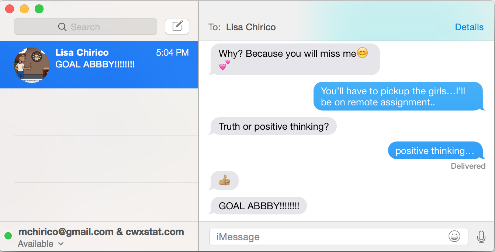
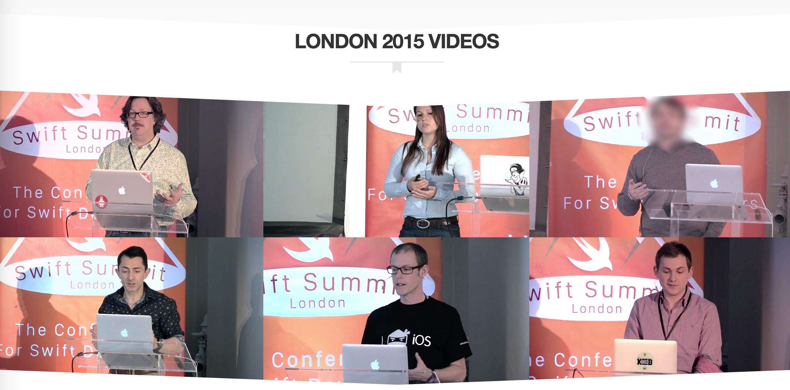
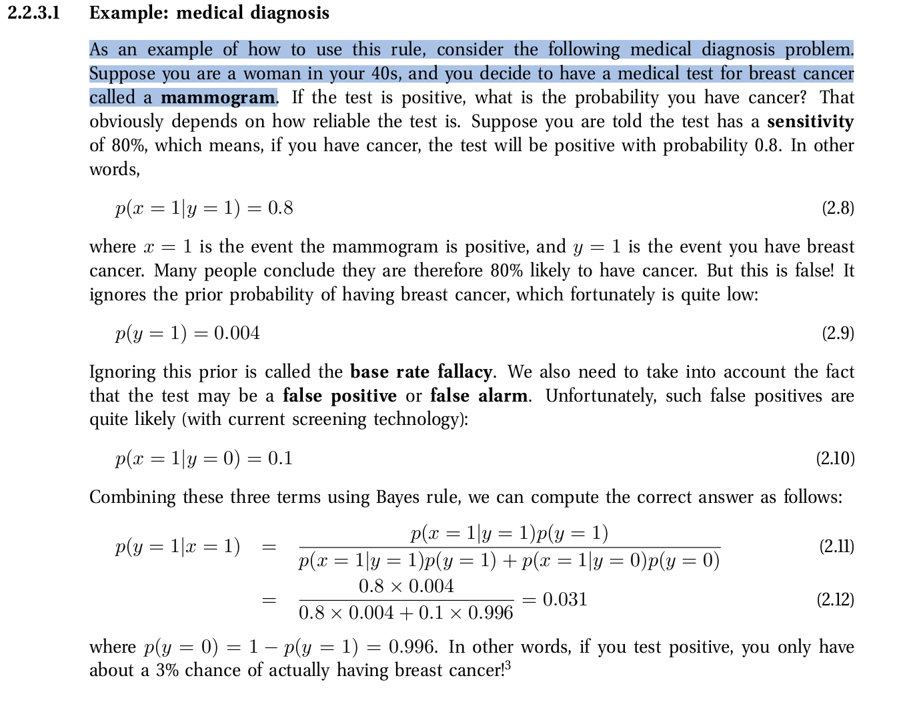
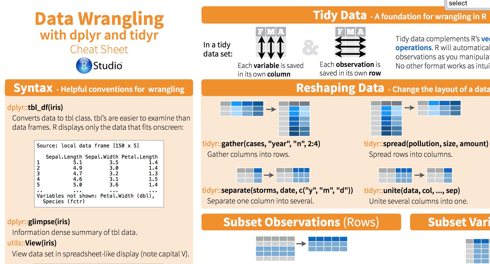
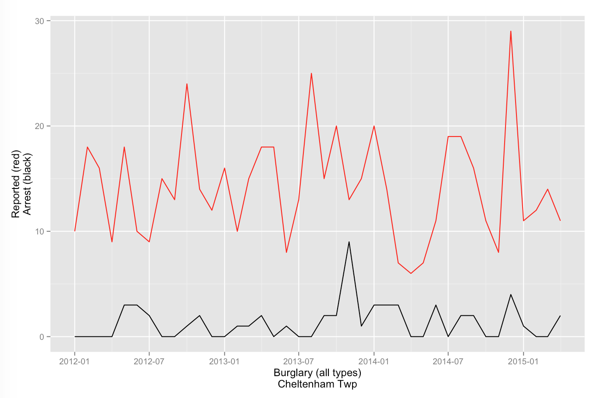
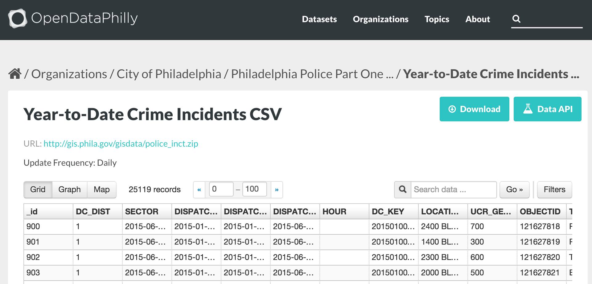
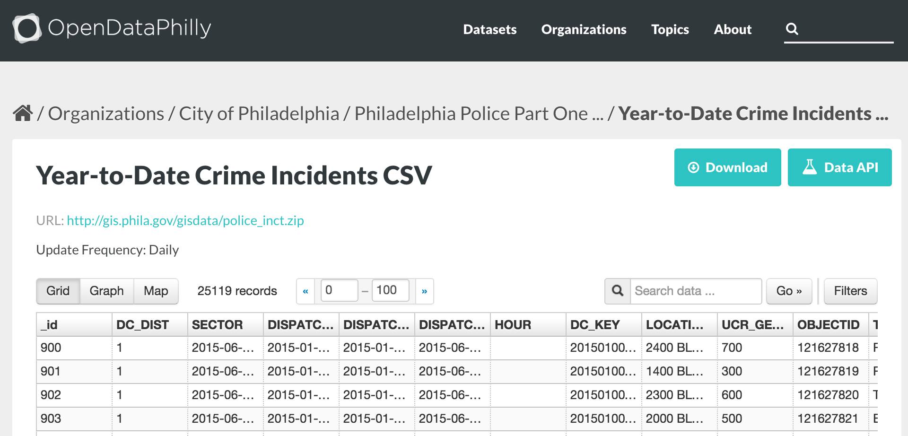

Mike Chirico's Blog
STUFF ABOUT MY DAY
Autolayout with multiple TableViews
Getting Docker 1.8 running on CentOS Linux release 7.1.1503
See list of latest packages: Docker packages yum install -y http://yum.dockerproject.org/repo/main/centos/7/Packages/docker-engine-1.8.3-1.el7.centos.x86_64.rpm systemctl start docker systemctl status docker
Gestures to mutliple tableviews in a single view controller.

Adding multiple views by embedding in a navigation controller.
Adding multiple views by embedding in a tab bar controller.
Simple way to write/read in Swift
Dictionaries
These are probably the most useful dictionary functions…and they’re simple to use.
var sDict:[String:Int]=[:] // Define your dictionary
var t="one"
sDict[t] = (sDict[t] ?? 0) + 1 // ["one":1]
sDict[t] = (sDict[t] ?? 0) + 1 // ["one":2]
// Note above the use of the 'Nil Coalescing Operator. If a
// key does not exist in the dictionary, it's added with a value
// of (0) + 1, or 1. This 'Nil Coalescing Operator is pretty handy.
let names = ["tom","bob","sue","tom","wendy","sue"] // Suppose you want to know how many times
// each name comes up.
for i in names {
sDict[i] = (sDict[i] ?? 0) + 1 // Use 'Nil Coalescing Operator'
}
// ["sue": 2, "tom": 2, "one": 2, "bob": 1, "wendy": 1]
// Okay, but now you probably want it ordered.
for i in sDict.keys.sort(<) {
print(i,sDict[i]!)
}
// Suppose you know the value, but not the keys
for i in sDict.values.sort(<) {
let keys = (sDict as NSDictionary).allKeysForObject(i)
print(keys,i)
}
/* The above works, you'll get the output below
with duplicates.
[bob, wendy] 1
[bob, wendy] 1
[sue, tom, one] 2
[sue, tom, one] 2
[sue, tom, one] 2
But, you can fix this using Set
*/
var mSet:Set<String>=[]
for i in sDict.values.sort(<) {
let keys = (sDict as NSDictionary).allKeysForObject(i)
mSet.insert("\(keys),\(i)")
}
print("\n\n")
for i in mSet {
print(i)
}
/*
[sue, tom, one],2
[bob, wendy],1
*/
Cool, you can actually create a SQLite database on the Watch, if you're using WatchOS 2.0
{kind=link}
C and Swift from the command line (OS X)
You can combine C and swift from the command line
The C files
// h.h
#ifndef h_h
#define h_h
#include <stdio.h>
void pr();
#endif /* h_h */// h.c
#include "h.h"
void pr() {
printf("This is a test from c\n");
}The Swift file
// Hello.swift
print("Hello... in swift")
pr()The Bridge file
// Bridge.h
#include "h.h"Commands to compile and link everything together.
xcrun clang h.c -o h.o -c
xcrun swiftc -c Hello.swift -import-objc-header Bridge.h -F /System/Library/Frameworks -I/usr/include
xcrun swiftc -o hello Hello.o h.o
Now just run it...
./Hello
Hello... in swift
This is a test from cRuns
Creating Your Own Blocker Extensions
Good article on webkit about creating your own blocker extensions in iOS 9.
Here's a simple rule that blocks png images on my site.
Digging into Past Conversations
If you use iMessage, all the text is recorded in a sqlite database.
Take, for example, the following conversation...

You can access the text of the conversation in chat.db, which is found under the user's Library directory.
sqlite3 /Users/$(whoami)/Library/Messages/chat.db
sqlite> select text from message;
....
I think it’s for serious felonies…not traffic ticket stuff.
If they don't cancel the day before it should be interesting
Yeah..as long as it’s short…a day or two.
Why? Because you will miss me😊💕
You’ll have to pickup the girls…I’ll be on remote assignment..
Truth or positive thinking?
positive thinking…
👍🏽
GOAL ABBBY!!!!!!!!
sqlite>
London Swift Talks - (click on image, then, scroll to the bottom)
Taking a look at Google's API... here
I have a lot of data from iOS, raspberry pi that needs to be made presentable.
I love this example...
Analyzing data
Spending too much time on these maps. But, it's kinda cool.
Pivot Tables in R: tidyr and SQLite
require(RSQLite)
library(dplyr)
library(tidyr)
conn <- dbDriver("SQLite")
db <- dbConnect(conn,"hr.db")
dbSendQuery(db, "DROP TABLE IF EXISTS hr;")
dbSendQuery(db, "CREATE TABLE hr (date Date,name varchar(10),hb int);")
dbSendQuery(db, "insert into hr values ('2015-08-05 13:21:01','Mike Chirico',55)")
dbSendQuery(db, "insert into hr values ('2015-08-05 13:21:02','Mike Chirico',56)")
dbSendQuery(db, "insert into hr values ('2015-08-05 13:21:03','Mike Chirico',57)")
dbSendQuery(db, "insert into hr values ('2015-08-05 13:21:01','Lisa Anderson',80)")
dbSendQuery(db, "insert into hr values ('2015-08-05 13:21:02','Lisa Anderson',79)")
dbSendQuery(db, "insert into hr values ('2015-08-05 13:21:03','Lisa Anderson',78)")
d <- dbReadTable(db, "hr")
d <- tbl_df(d)
str(d)
# ***************************************************
# Create pivot
# ***************************************************
pivot = d %>% spread(name,hb)
pivot
> pivot
date Lisa Anderson Mike Chirico
1 2015-08-05 13:21:01 80 55
2 2015-08-05 13:21:02 79 56
3 2015-08-05 13:21:03 78 57
pivot= as.data.frame(pivot)
dbWriteTable(db,"pivot",pivot,overwrite=TRUE)
Note that the above SQLite table will look like the following:
sqlite> .tables
hr pivot
sqlite> .schema pivot
CREATE TABLE pivot
( "date" TEXT,
"Lisa Anderson" INTEGER,
"Mike Chirico" INTEGER
);
sqlite> select * from pivot;
2015-08-05 13:21:01|80|55
2015-08-05 13:21:02|79|56
2015-08-05 13:21:03|78|57Also the pdf below is a good reference.

Crime in Cheltenham
So I've been looking at local crime statistics. Below are the monthly reports of "Burglary" (in red) and (in blue) the number of arrests.
{kind=link}
The number of reported crimes in this category (Burglary), has a mean of 14 (month) and a standard deviation of 5.
I would be nice to get crime data, similiar to what's availabe from Philadelphia.
 

Crime map of center city Philadelphia.